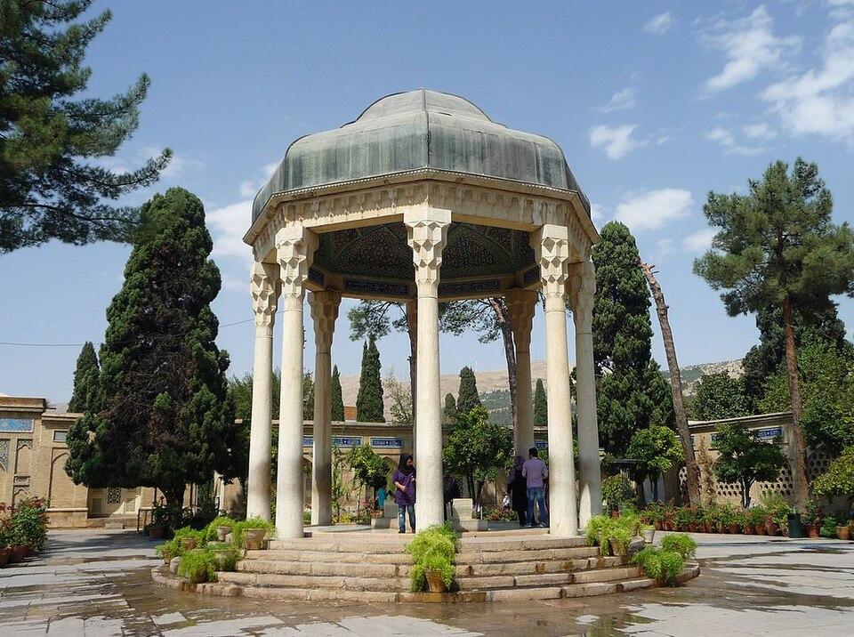

حافظیه یا آرامگاه حافظ (گشایش: ۸۵۶ ه.ق – ۱۴۵۲ م)، محل خاکسپاری حافظ شیرازی در شیراز است. این بنا به فرمان رضاشاه به علیاصغر حکمت، وزیر آموزش و پرورش وقت و برپایهٔ طرحی از آندره گُدار طراحی و بازسازی شد. مجری آن، علی ریاضی، رئیس اداره آموزش و پرورش فارس، و سرپرستش علی سامی بودند. حافظیه بارها از سوی حاکمان تیموری، صفوی، افشار و زند بازسازی و مرمت شد. سرانجام در سال ۱۳۱۴ ش/۱۹۳۵ م، آخرین اقدام مهم و شایسته توسط وزارت آموزش و پرورش فارس به ابتکار علیاصغر حکمت، وزیر آموزش و پرورش صورت گرفت و ساخت یک بنای جدید ترتیب داده شد. آندره گُدار باستانشناس فرانسوی، مدیر کل باستانشناسی کشور، طرح و نقشهای مناسب را طراحی کرد. اجرای این پروژه به علی ریاضی، رئیس اداره آموزش و پرورش فارس، واگذار شد و علی سامی سرپرستی آن را برعهده گرفت. در این طرح، به سبک همان طرح گذشته، حافظیه به دو بخش شمالی و جنوبی تقسیم شد و ایوانی به طول ۵۶ و عرض ۷ متر و با ۲۰ ستون سنگی به ارتفاع ۵ متر، آن دو باغ را از یکدیگر جدا میکند. اجرای کامل این طرح تا سال ۱۳۱۷ ه.ش به درازا انجامید.
مقبرهٔ حافظ و پیرامونش، پیشتر با نام «تِکْیهٔ حافظ» شناخته میشد. حافظیه در جنوب دروازهٔ قرآن در حاشیهٔ شمالی شیراز و در ابتدای خیابان گلستان — که قبلاً به «خیابان خرابات» معروف بود — واقع شده است. این مکان در موقعیتی قرار دارد که به «گُلگَشتِ مُصَلّیٰ» مشهور است؛ میدانی تفریحی که اغلب در اشعار حافظ ذکر میشود و حدود ۱۹٬۰۰۰ متر مربع وسعت دارد و یکی از مشهورترین قبرستانهای شیراز بهنام «خاکِ مصلّی» را در خود جای داده است.[۱]
مکانی در شمال شهر شیراز که از ساحل شمالی رودخانهٔ خرمدره در شمال دروازهاصفهان فعلی آغاز میشده و تا دامنهٔ کوه چهل مقام امتداد مییافته است را «مصلا» مینامیدند. این مکان از قدیم مورد احترام مردم شیراز بوده تا جایی که بسیاری از مردم، رسوماتی مانند نماز جماعت، نماز عید فطر و قربان را در این مکان خوش آبوهوا بهجا میآوردند و عدهای نیز مردگان خود را برای آمرزش، در این مکان به خاک میسپردند و بخشی از این منطقه به گورستان عمومی تبدیل شد. آرامگاه حافظ نیز در شمال این دشت جای دارد.[۲] حافظ را در کتِ شیراز یا مصلای شهر بهخاک سپردند.[۳] نخستین کسی که بر مقبرهٔ حافظ نام «حافظیه» مینهد، اوحَدی بَلْیانی است. سپس در رستمُالتَّواریخ اثر رستمُالْحُکَما در دو جای این نام میآید.[۴] مقبرهٔ حافظ و پیرامونش، پیشتر با نام «تِکْیهٔ حافظ» شناخته میشد[۵] آنچنانکه در دُرّهٔ نادری به نام «تکیه» خوانده شده است.[۶] نویسندهٔ فارسنامه نیز از «تکیهٔ خواجه حافظ» نام برده است.[۷]
